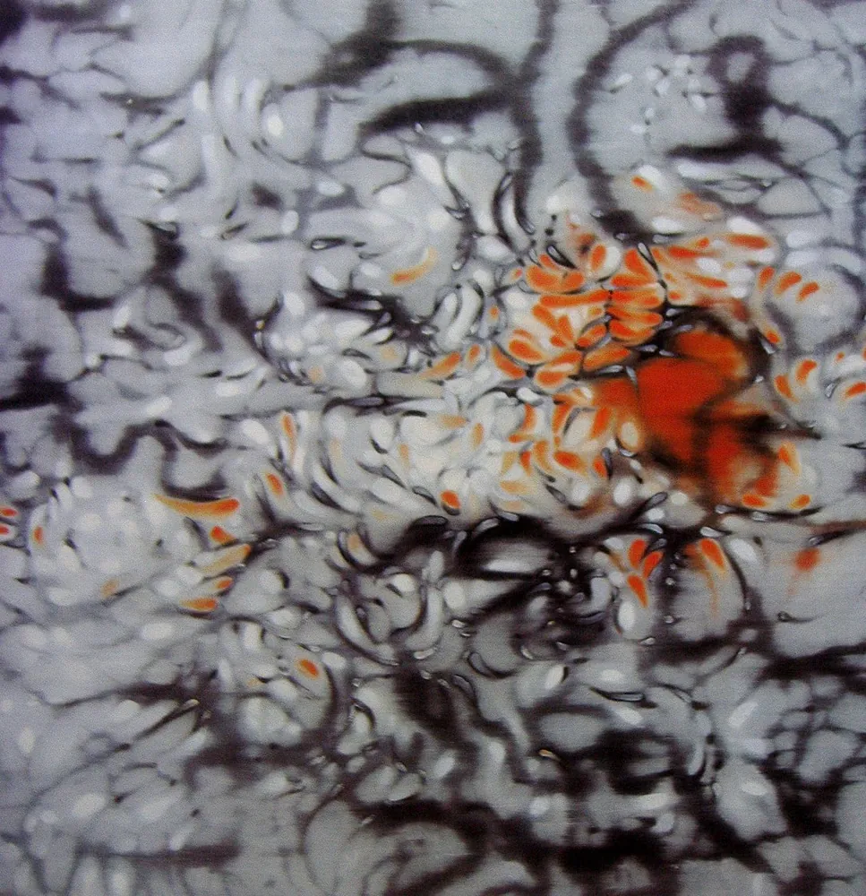
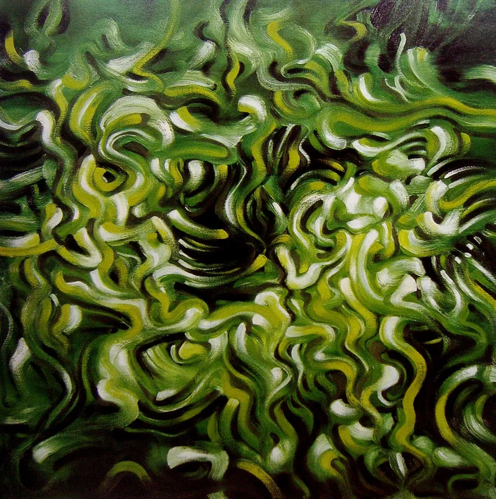
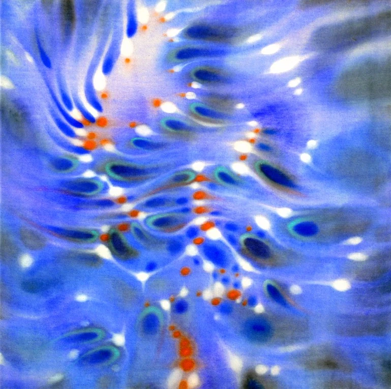
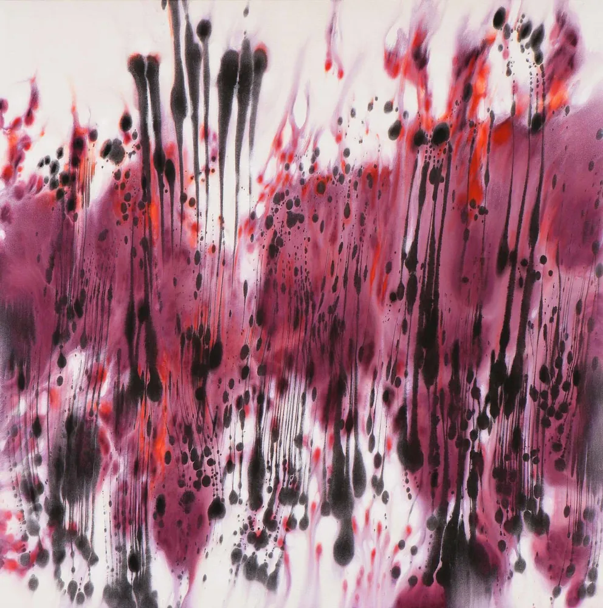
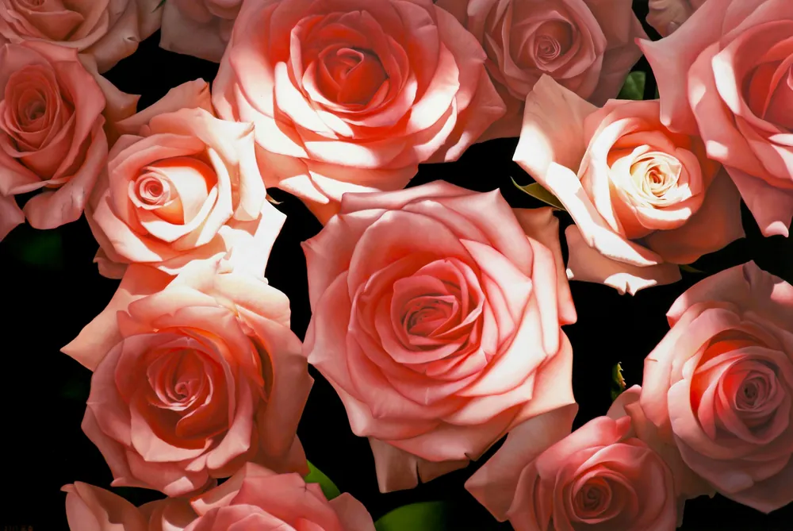
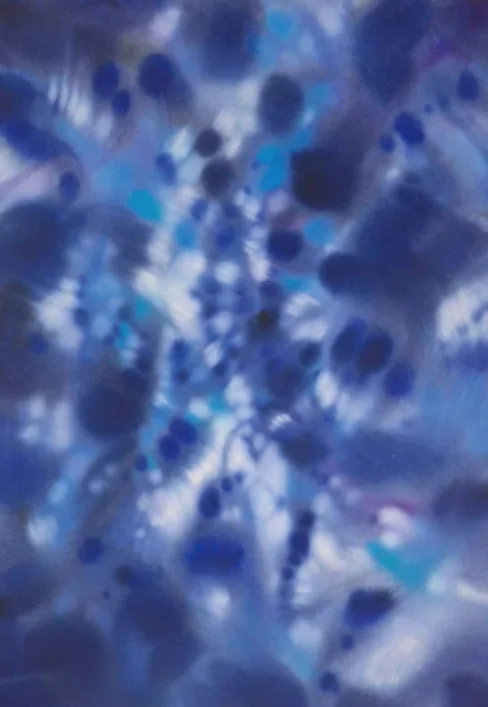
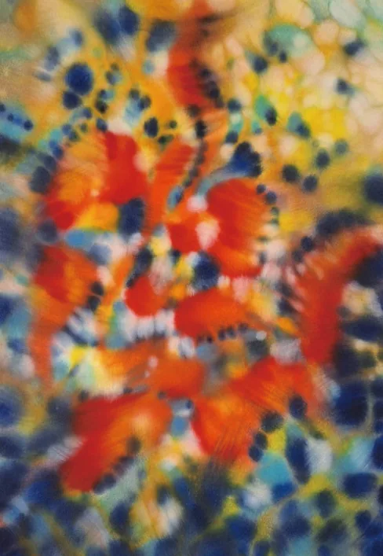

작품
1991–1995
욕망의 사유Psyche & Eros


1996–1998
내면 풍경Interior Scene






이 시리즈의 다른 작품은 문의해 주십시오.문의
1999
심상State of Heart


2000–2014
식상(植相)Realism (Zhi Xiang)


2007–2009
따라 걷기Take a Walk
걷는 대로／이미 아는 탐색의 궤적이 아니다／걷는 대로／생각이 흐름을 멈추고／걷는 대로／돌아보니 이미 연기처럼 흩어졌다／나는 이 순간 증발한다／남겨진 흔적과 도상／무엇이기도 하고／아무것도 아니기도 하다량즈칭, 2009 창작 노트




2010
흐름Flowing




이 시리즈의 다른 작품은 문의해 주십시오.문의
2010
구름·산·물Cloud, Mountain, Water


2011–2012
꽃－형과 색Flower — Form and Colour





2012
천년의 꽃Millennial Splendour


2017–2018
빛의 변화Guang Bian (Light Shift)
「감각」은 사유하고, 숨을 고르고, 잠시 멈추는 시간을 거쳐야 비로소 몸에서 가라앉아 나오는 정서이자 깨달음이다.진저우칸(今周刊) 2018(광고 기획, 원 발언 확인 중)


이 시리즈의 다른 작품은 문의해 주십시오.문의
2023년부터, 진행 중
빛나는 류킨Ryukin (working title)

2024
우발 abiogenesisAbiogenesis





욕망의 사유 No.1 1991
욕망의 사유 No.20 1994
욕망의 사유 No.29
욕망의 사유 No.30
욕망의 사유 No.32
내면 풍경 No.3(3연작) 1996
내면 풍경 No.21
내면 풍경 No.23
내면 풍경 No.25
내면 풍경 No.27
내면 풍경 No.29
내면 풍경 No.32
내면 풍경 No.35
심상 No.13
심상 No.47
심상 No.98
파초 잎 2000
파초 잎 2001
녹나무 2003
녹죽
흰나비생강 2004
상사산 소장됨
파초 2011 소장됨
파초 숲 소장됨
따라 걷기 No.36 2007–2009 소장됨
따라 걷기 No.38 2007–2009
따라 걷기 No.33 2007–2009
따라 걷기 No.31 2007–2009
따라 걷기 No.32 2007–2009
따라 걷기 No.23 2007–2009
따라 걷기 No.24 2007–2009
따라 걷기 No.28 2009 소장됨
따라 걷기 No.26 2009 소장됨
따라 걷기 No.1 2009 소장됨
따라 걷기 No.5 2009 소장됨
따라 걷기 No.13 2009 소장됨
따라 걷기 No.14 2009 소장됨
따라 걷기 No.17 2009 소장됨
흐름 No.2 2010
흐름 No.4 2010
흐름 No.6 2010
흐름 No.11 2010
흐름 No.12 2010
흐름 No.13 2010
흐름 No.16 2010
흐름 No.18 2010
구름 2010 소장됨
산 2010 소장됨
물 2010 소장됨
흰 장미-1 2011 소장됨
흰 장미-2 2011 소장됨
분홍주황 장미-1 2011 소장됨
오리엔탈 백합 2011 소장됨
마젠타 백합 소장됨
노란 애기백합-2 2012 소장됨
아마릴리스 연작-1 2012
천년의 꽃-1 2012 소장됨
천년의 꽃-3 2012 소장됨
천년의 꽃-4 2012 소장됨
빛의 변화 No.6 2017–2018
빛의 변화 No.8 2017–2018
빛의 변화 No.14 2017–2018
빛의 변화 No.18 2017–2018
빛의 변화 No.20 2017–2018
빛의 변화 No.21 2018 소장됨
빛의 변화 No.24 2017–2018 소장됨
빛의 변화 No.28 2017–2018
빛의 변화 No.29 2017–2018
빛의 변화 No.33 2017–2018
빛의 변화 No.34 2017–2018
빛나는 류킨 No.01 2023 소장됨
우발 No.1 2024
우발 No.2 2024
우발 No.3 2024
우발 No.4 2024
우발 No.5 2024
우발 No.6 2024
우발 No.7 2024
우발 No.8 2024
우발 No.9 2024
우발 No.10 2024
우발 No.11 2024
우발 No.12 2024
우발 No.13 2024
해당하는 작품이 없습니다.